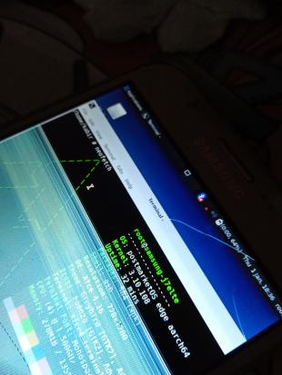

Samsung Galaxy J7 (samsung-j7elte)
Jump to navigation
Jump to search
|
 This is a Image of a pretty badly destroyed Samsung Galaxy J7 running pmOS... | |
| Manufacturer | Samsung |
|---|---|
| Name | Galaxy J7 |
| Codename | samsung-j7elte |
| Released | 2015 |
| Category | testing |
| Original software | Android |
| Original version | 5.1.1 |
| Extended version | 6.1 |
| postmarketOS kernel | 3.10.108 |
| Hardware | |
| Chipset | Samsung Exynos 7580 Octa |
| CPU | 8x ARM Cortex-A53 @ 1500 MHz |
| GPU | ARM Mali-T720 MP2 @ 600 MHz |
| Display | 720x1280 SuperAMOLED |
| Storage | 16 GB |
| Memory | 1.5 GB LPDDR3 |
| Architecture | aarch64 |
| Type | handset |
{kind=link}
| USB Networking |
Works
|
|---|---|
| Flashing |
Partial
|
| Touchscreen |
Works
|
| Display |
Partial
|
| WiFi | |
| FDE | |
| Mainline | |
| Battery |
Partial
|
| 3D Acceleration | |
| Audio |
Partial
|
| Bluetooth | |
| Camera | |
| GPS | |
| Mobile data | |
| SMS | |
| Calls | |
| USB OTG |
Works
|
| NFC |
Unavailable
|
| Accelerometer | |
|---|---|
| Magnetometer | |
| Ambient Light | |
| Proximity | |
| Hall Effect | |
| Barometer | |
| Power Sensor | |
| Camera Flash | |
|---|---|
| Keyboard |
Unavailable
|
| Touchpad |
Unavailable
|
| USB-A |
Unavailable
|
| HDMI/DP |
Unavailable
|
| Ir TX |
Unavailable
|
| Ir RX | |
| Stylus | |
| Haptics | |
| Ethernet | |
| FOSS bootloader |
Unavailable
|
Contributors
Users owning this device
- KrakinTheKonsole (Notes: Broken display digitizer. Using OTG+BT to control it.)
Development status
Sources used
Lineage OS kernel sources for Exynos 7580 Devices
Compiles
- Linux kernel 3.10.108
- Device information
What's working
- Hardcoded kernel arguments
- Making a PMOS Recovery zip
- Flashing using custom recovery
- Showing splash screen during boot
- Starting full X-Session and using the UI with USB-OTG Keyboard and Mouse
- Running LXQt or SXMO
What's wrong
- When the phone boots it shows the splash screen meaning the rendering is working. But it crashes and force reboots soon after. - This is probably caused due to the fact that the init is messed up because the bootloader passes the wrong kernel arguments. The ones that are used to boot android. - But this issue has been fixed
- Being unable to mount the system partitions in TWRP to check logs or modify the system. - This is a common issue in many PMOS builds.
- Display manager not showing up after starting up
- WiFi and Bluetooth hardware not being detected or initialized.
- LightDM Failing to start properly. Causing it to not boot into desktop automatically
How to enter flash mode
Power down the device first.
ODIN/Heimdall Mode
To enter ODIN/Heimdall flashing mode, press and hold Power + Home + Volume Down buttons until a warning screen pops up. Then press Volume Up button to enter ODIN mode.
Recovery (Stock/Custom) Mode
To enter Recovery (Stock/Custom) mode, press and hold Power + Home + Volume Up buttons until the Recovery splash screen pops up.
Installation
Perform the standard installation method provided by PostMarket OS Installation Guide
But keep in mind that...
| WARNING: Installation with Heimdall partially works. It is recommended to use the custom recovery method provided by PMOS Wiki to install it. |
Remember to add these packages into the rootfs when asked in 'pmbootstrap init' :
|
See also
Lineage OS kernel sources for Exynos 7580 Devices